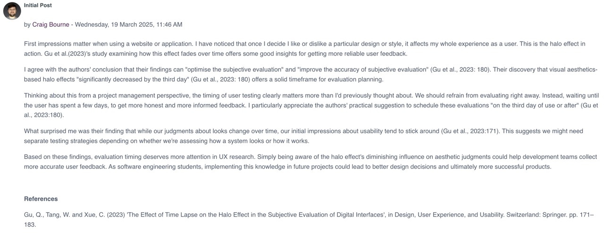

Unit 5: User Experience
In unit 5 we examined the concept of User Experience during a software development project. We considered the variety of stakeholders involved in projects, whose User Experience is prioritised and the critical role which is played by the project manager in facilitating this.
Required Reading
- Bosse, S. (2022) 'PSciLab: An Unified Distributed and Parallel Software Framework for Data Analysis, Simulation and Machine Learning—Design Practice, Software Architecture, and User Experience', Applied Sciences, 12(6), pp. 2887.
- Wang, Junfeng et al. (2022) 'A Comparative Research on Usability and User Experience of User Interface Design Software', International Journal of Advanced Computer Science & Applications, 13(8).
- International Organisation for Standardisation (2018). Ergonomics of Human-system Interaction - Part 11: Usability: Definitions and Concepts. ISO 9241-11:2018.
Unit Work
Collaborative Discussion - Summary post
We were also asked to make our first contributions to a new collaborative discussion that would last for several weeks.
The task was to consider that human emotions can affect the user experience, a fact which contributes to the complexity of user satisfaction with a product. Further complicating the process is the fact that user emotions on the first use of a product are likely to be different to their emotions once they become more experienced.
We were asked to read Gu et al. (2023) and discuss whether we agree with the authors' findings.
Here is a screenshot of my post in the forum here:
You can read the full discussion post here.